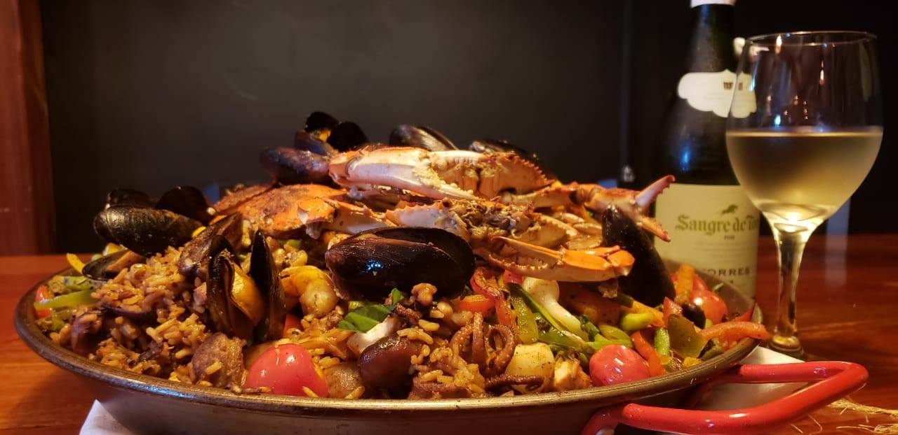

Restuarants
Discover the best restaurant in Cayo, Belize including Hode's Place Bar & Grill, Erva's, Running W Steakhouse & Restaurant, Cenaida's, Ko-Ox Han nah, Pop's Belize Restaurant, Benny's Kitchen, Cheers Restaurant & Cabanas, Chaa Creek, Martha's Guesthouse restaurant

RUNNING W STEAKHOUSE & RESTAURANT
Running W Steakhouse & Restaurant restaurant offers an air-conditioned dining hall and outdoor Seating area where guests can enjoy a selection of appetizers and entrées that feature meats from the family ranch, family recipes, Belizean cuisine, vegan and vegetarian options.
VISIT SITE

Crave House of Flavor
International cuisine bistro style with seasonal products, special diets or simply an elegant dine experience
Visit Site

Cheers Restaurant
At Cheers Restaurant we take care to only use the freshest ingredients for our dishes, and cook them to perfection. So when you hear a rooster crow in the background – think fresh eggs directly from our chickens to your plate.
VISIT SITE

HODE'S PLACE BAR & GRILL
Hode's Place is a beautiful Restaurant and Hotel nestled on a 6-acre lot in the Town of San Ignacio. Bring your entire family and enjoy wonderful family time with us.
VISIT SITE

Erva's Restaurant
The rustic environment gives off a true Belizean vibe where visitor comes to adore and love. Erva's Restaurant and Lounge " Where friends meet and leave as family.
VISIT SITE

CENAIDA'S
One of the best places in town for authentic traditional Belizean food, Cenaida's is a no-frills diner serving rice and beans, stew chicken and cow-foot soup, along with burritos and fajitas.
VISIT SITE

Pop's Restaurant
Best way to start the day with a Belizean Breakfast served by a friendly staff. At POPS you will get the chance to try Belizean specialties such as scramble eggs with CHAYA, the Belizean spinach full of Health and richer in iron than spinach, and a powerful source of potassium and calcium.
VISIT SITE
Benny's Kitchen
Benny's Kitchen, located in the beautiful village of San Jose Succotz, across the ancient ruins at Xunantunich, serves authentic Mayan dishes. This little open-air restaurant near Xunantunich has won many fans who come for hearty Mayan and Creole dishes at rock-bottom prices.
VISIT SITE

Martha’s Guesthouse
Martha’s Guesthouse flaunts a very hospitable and distinct staff which reflects the culture of the Belizean people. Martha’s Restaurant on the first floor of the Guesthouse serves the most delightful local dishes you won’t find anywhere else in San Ignacio Town.
VISIT SITE
KO-OX HAN NAH
Cosy little restaurant & meat shop in downtown San Ignacio. Specializing in Burgers, Quesadillas, Curries, Grilled Meats & many Belizean favourites. We also raise our own lamb & chickens on our farm in Calla Creek providing fresh meat, eggs & dairy.
VISIT SITE